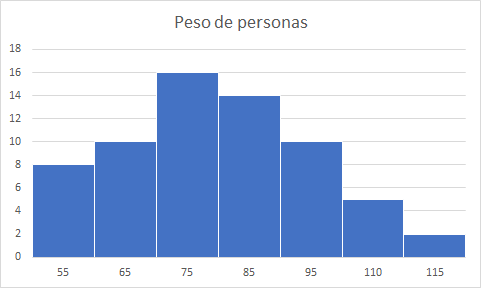

Gráficos estadisticos
Un gráfico o representación gráfica es un tipo de representación de datos, generalmente numéricos, mediante recursos gráficos (líneas, vectores, superficies o símbolos), para que se manifieste visualmente la relación matemática o correlación estadística que guardan entre sí
Tipos de gráficas


Diagrama circular o Diagrama de pastel
Un diagrama de sectores se puede utilizar para todo tipo de variables, pero se usa frecuentemente para las variables cualitativas.Los datos se representan en un círculo, de modo que el ángulo de cada sector es proporcional a la frecuencia absoluta correspondiente.

El diagrama circular se construye con la ayuda de un transportador de ángulos.
Ejemplo:
En una clase de 30 alumnos, 12 juegan a baloncesto, 3 practican la natación, 4 juegan al fútbol y el resto no practica ningún deporte.
Aplicando la formula anterior podemos calular los ángulos para cada caso:

| Alumnos | Ángulo | |
|---|---|---|
| Baloncesto | 12 | 144° |
| Natación | 3 | 36° |
| Fútbol | 9 | 108° |
| Sin deporte | 6 | 72° |
| Total | 30 | 360° |

Diagrama de barras
Un diagrama de barras se utiliza para de presentar datos cualitativos o datos cuantitativos de tipo discreto.
Se representan sobre unos ejes de coordenadas, en el eje de abscisas se colocan los valores de la variable, y sobre el eje de ordenadas las frecuencias absolutas o relativas o acumuladas.
Los datos se representan mediante barras de una altura proporcional a la frecuencia.
Ejemplo
Un estudio hecho al conjunto de los 20 alumnos de una clase para determinar su grupo sanguíneo ha dado el siguiente resultado
Tabla de frecuencias
| Grupo sanguíneo | fi |
|---|---|
| A | 6 |
| B | 4 |
| AB | 1 |
| 0 | 9 |
| 20 |
Gráfico resultante

Histograma
Un histograma es una representación gráfica de una variable en forma de barras.
Se utilizan para variables continuas o para variables discretas, con un gran número de datos, y que se han agrupado en clases.
En el eje abscisas se construyen unos rectángulos que tienen por base la amplitud del intervalo, y por altura, la frecuencia absoluta de cada intervalo.La superficie de cada barra es proporcional a la frecuencia de los valores representados.
Ejemplo
El peso de 65 personas adultas viene dado por la siguiente tabla:
| ci | fi | Fi | |
|---|---|---|---|
| [50, 60) | 55 | 8 | 8 |
| [60, 70) | 65 | 10 | 18 |
| [70, 80) | 75 | 16 | 34 |
| [80, 90) | 85 | 14 | 48 |
| [90, 100) | 95 | 10 | 58 |
| [100, 110) | 110 | 5 | 63 |
| [110, 120) | 115 | 2 | 65 |
| 65 |
Nuestro histograma quedaría de la siguiente forma:
Polígono de frecuencia
Un polígono de frecuencias se forma uniendo los extremos de las barras de un diagrama de barras mediante segmentos.
También se puede realizar trazando los puntos que representan las frecuencias y uniéndolos mediante segmentos.
Ejemplo
Las temperaturas en un día de otoño de una ciudad han sufrido las siguientes variaciones:
| Hora | Temperatura |
|---|---|
| 6 | 7º |
| 9 | 12° |
| 12 | 14° |
| 15 | 11° |
| 18 | 12° |
| 21 | 10° |
| 24 | 8° |
Poligono de frecuencia con datos agrupados
Para construir el polígono de frecuencia se toma la marca de clase que coincide con el punto medio de cada rectángulo de un histograma.
Ejemplo
El peso de 65 personas adultas viene dado por la siguiente tabla:
| ci | fi | Fi | |
|---|---|---|---|
| [50, 60) | 55 | 8 | 8 |
| [60, 70) | 65 | 10 | 18 |
| [70, 80) | 75 | 16 | 34 |
| [80, 90) | 85 | 14 | 48 |
| [90, 100) | 95 | 10 | 58 |
| [100, 110) | 110 | 5 | 63 |
| [110, 120) | 115 | 2 | 65 |
| 65 |
Ojiva
La ojiva es el polígono de frecuencias acumuladas, es decir,en ellas se permite ver cuántas observaciones se encuentran por debajo de ciertos valores en lugar de mostrar los números asignados a cada intervalo. Podemos representar la distribución de frecuencias relativas acumuladas mediante un gráfico de línea llamado Ojiva. Esta se construye de la siguiente manera:
- En el eje horizontal en lugar de las clases se colocan los límites superiores.
- En el eje vertical se escriben las frecuencias.
Tabla de frecuencia de calificaciones
| Clase | f | fa | fr | fra |
|---|---|---|---|---|
| 50 - 59 | 12 | 12 | 0.24 | 0.24 |
| 60 - 69 | 15 | 27 | 0.30 | 0.54 |
| 70 - 79 | 13 | 40 | 0.26 | 0.8 |
| 80 - 89 | 6 | 46 | 0.12 | 0.92 |
| 90 - 99 | 4 | 50 | 0.08 | 1 |
La ojiva comienza con el límite superior de la primera clase.